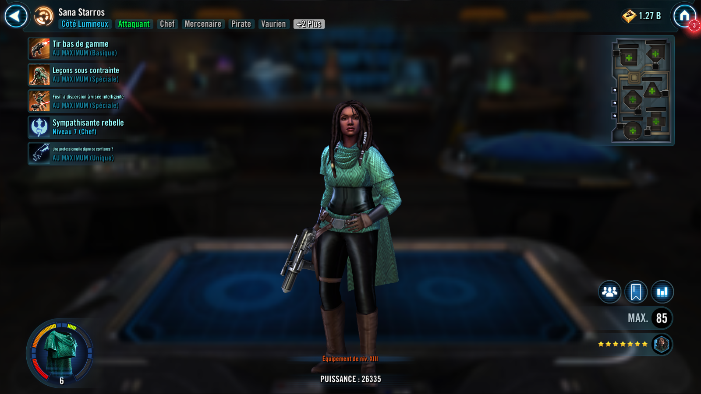
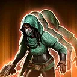
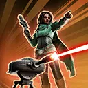
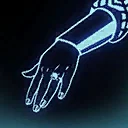

Sana Starros
Scoundrel turned Rebel sympathizer that helps her team deal area of effect damage
Scoundrel turned Rebel sympathizer that helps her team deal area of effect damage

Deal Special damage to target enemy and inflict Vulnerable for 1 turn. If the enemy already had Vulnerable, inflict Vulnerable to all enemies for 1 turn.

Rebel Scoundrel Tanks recover 20% Protection. Dispel all debuffs on non-Tank Rebel allies and Sana, and they gain Critical Chance Up and Stealth for 2 turns. Then, call all Stealthed allies to assist with +100% Critical Damage.

Deal Special damage to all enemies and inflict Tenacity Down for 2 turns. Deal damage again to all Target Locked enemies and Stagger them for 1 turn.
Rebel Scoundrel Tanks have +30% Defense, Max Health, and Max Protection and gain 15% Turn Meter whenever a non-Tank Rebel ally or Sana is damaged by an attack. Rebel allies and Sana have +30% Offense and Potency. At the start of battle, Rebel allies and Sana gain Protection Up (100%) until they use an ability.
Whenever a Rebel ally or Sana has less than 100% Turn Meter and gains bonus Turn Meter, they gain 25% Critical Damage (stacking) until they critically hit an enemy. If a Rebel Scoundrel removes Turn Meter from an enemy, that enemy also takes damage equal to 20% of their Max Health, which can't be evaded. This damage can't defeat enemies. The first time each turn Rebel allies or Sana deal damage more than once, they gain 25% Max Health (stacking, max 200%) for the rest of the encounter. Whenever Rebel allies or Sana critically hit an enemy, they inflict Target Lock for 1 turn, which can't be evaded. Whenever an enemy is inflicted with Target Lock, reduce Rebel Scoundrel Tanks' cooldowns by 1.
Omicron Boost : While in Territory Wars: Rebel Scoundrels and Sana are immune to Daze. At the start of battle, Rebel Scoundrel Tanks Taunt for 1 turn and Rebel Scoundrels and Sana start with Tenacity Up for 1 turn. Target Lock can't be resisted from this ability. The first time each turn Rebel allies and Sana deal damage more than once, dispel all buffs on all enemies and inflict Healing Immunity for 1 turn.

Sana has +35% counter chance and +20% Critical Chance. At the start of each Rebel ally's turn, whenever Sana evades an attack, or whenever Sana attacks out of turn, all non-Scoundrel allies are inflicted with Suspicious for 1 turn, which can't be copied or resisted. Sana assists whenever a non-Attacker Rebel Scoundrel uses a Special ability. Whenever Sana assists this way, she recovers 20% Protection and Rebel allies recover half that amount. Whenever an enemy is inflicted with Target Lock, Sana gains 5% Turn Meter.
Sana can't gain more than 5 stacks of Profit.
Suspicious: -10 Speed, +100% Critical Chance (Does not stack with Critical Chance Up)